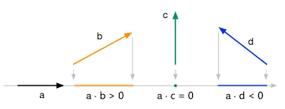
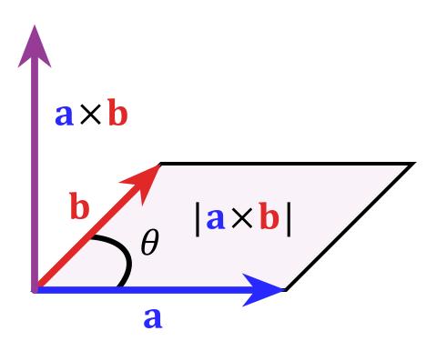

向量点乘与叉乘的概念及几何意义
向量点乘（内积）：
点乘(Dot Product) 的结果是点积，又称数量积或标量积(Scalar Product)。
在空间中有两个向量 $\vec{a}=(x_1,y_1),;\vec{b}=(x_2,y_2)$，它们之间的夹角为 $\theta$。
从代数的角度看，点积是两个向量对应位置上的积的和。
$$ \vec{a}\cdot\vec{b}=x_1x_2+y_1y_2 $$
从几何的角度看，点积是两个向量长度与它们夹角余弦的积。
$$ \vec{a}\cdot\vec{b}=|\vec{a}||\vec{b}|\cos\theta $$
-
几何意义：
点乘的结果表示 $\vec{a}$ 在 $\vec{b}$ 方向上的投影与 $|\vec{b}|$ 的乘积 ，反映了两个向量在方向上的相似度，结果越大越相似，可用于判断是否正交，具体对应关系为
-
$\vec{a}\cdot\vec{b}>0$，表示夹角为锐角($0^\circ<\theta<90^\circ$)
-
$\vec{a}\cdot\vec{b}=0$，表示夹角为直角($\theta=90^\circ$)
-
$\vec{a}\cdot\vec{b}<0$，表示夹角为钝角($\theta>90^\circ$)
 -
向量叉乘（外积）
叉乘(Cross Product) 又称向量积(Vector Product)。
从代数的角度看：
$$ \vec{a}\times\vec{b}=x_1y_2-x_2y_1 $$
从几何的角度看，运算结果是这两个向量所在平面的法向量。可以使用右手法则确定方向。如果 $\vec{b}$ 在 $\vec{a}$ 的逆时针方向，则叉乘结果大于零，否则小于零。
$$ \vec{a}\times\vec{b}=|\vec{a}||\vec{b}|\sin\theta\vec{n} $$
-
几何意义
如果以 $\vec{a}$ 和 $\vec{b}$ 为边构成一个平行四边形，那么这两个向量外积的的模长与这个平行四边形面积相等。

判断点是否在矩形内
如上图所示，只需判断该点是否在上下两条边之间和左右两条边之间即可。利用叉乘的方向性，分别判断。
要满足点 $P$ 在 $P_1P_2$ 和 $P_3P_4$ 之间，有:
$$ (P_1P_2\times P_1P)*(P_3P_4\times P_3P)\geq0 $$
同理，要满足 $P$ 在 $P_1P_2$ 和 $P_3P_4$ 之间，要满足:
$$ (P_2P_3\times P_2P)*(P_4P_1\times P_4P)\geq0 $$
代码实现如下：
class Point:
def __init__(self, x, y):
self.x = x
self.y = y
# 计算 p1 x p2
def cross_product(p1, p2):
return p1.x * p2.y - p1.y * p2.x
# 计算 |p1 p2| x |p1 p|
def get_cross(p1,p2,p):
return cross_product(Point(p2.x - p1.x, p2.y-p1.y), Point(p.x-p1.x, p.y-p1.y))
def isPointInMatrix(matrix, x,y):
"""
p1,p2,p3,p4 分别是矩形 左上角、左下角、右下角、右上角
"""
p1 = Point(matrix[0][0], matrix[0][1])
p2 = Point(matrix[1][0], matrix[1][1])
p3 = Point(matrix[2][0], matrix[2][1])
p4 = Point(matrix[3][0], matrix[3][1])
p5 = Point(x,y)
return get_cross(p1,p2,p5) * get_cross(p3,p4,p5) >= 0 and get_cross(p2,p3,p5) * get_cross(p4,p1,p5) >= 0
def test_ispointinmatrix():
matrix = [[0,4],[-1,2],[3,0],[4,2]]
print(isPointInMatrix(matrix, 3,3))
test_ispointinmatrix()
-
其他方法
- 点到矩形中心距离法： 计算点到矩形的中心的距离，如果这个距离小于矩形的一半长和一半宽的话，那么点在矩形内；
- 射线：从判断点向某个统一方向作射线，依交点个数的奇偶判断；
- 转角：按照多边形顶点逆时针顺序，根据顶点和判断点连线的方向正负（设定角度逆时针为正）求和判断；
- 夹角和：求判断点与所有边的夹角和，等于360度则在多边形内部；
- 面积和：求判断点与多边形边组成的三角形面积和，等于多边形面积则点在多边形内部。